Portfolio & cas clients.
Chaque projet partait d'une situation différente. Découvrez les réalisations et les accompagnements.
Des supports qui donnent envie de s'arrêter
Visuels commerciaux • Supports imprimés • Affichage
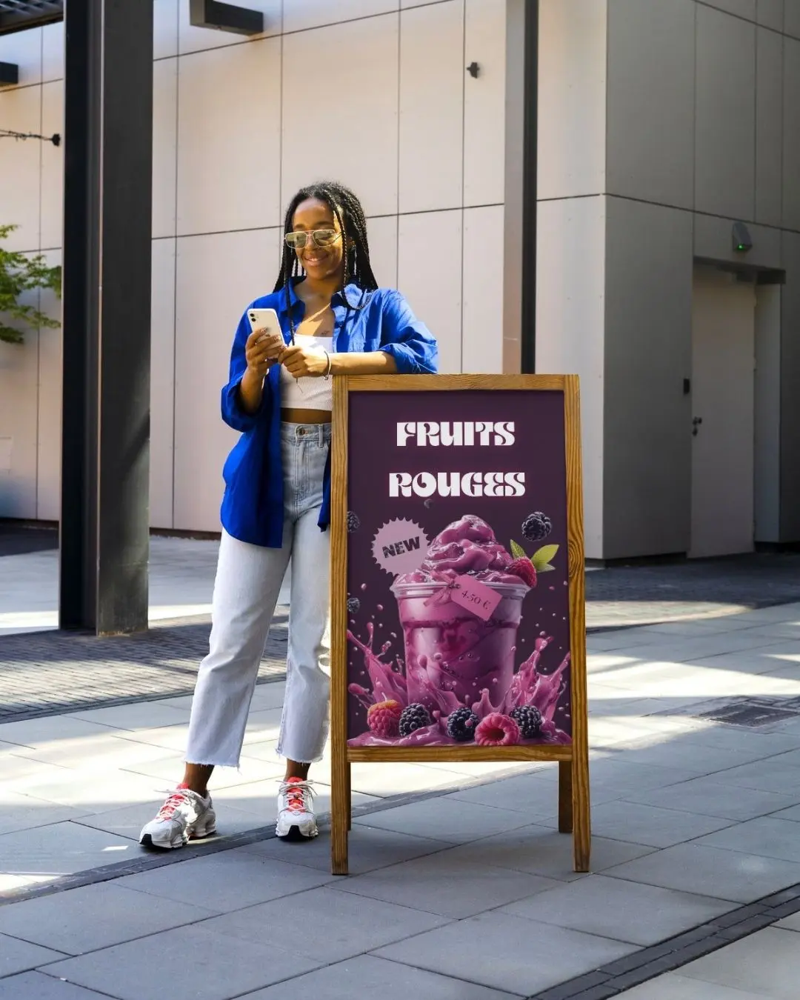
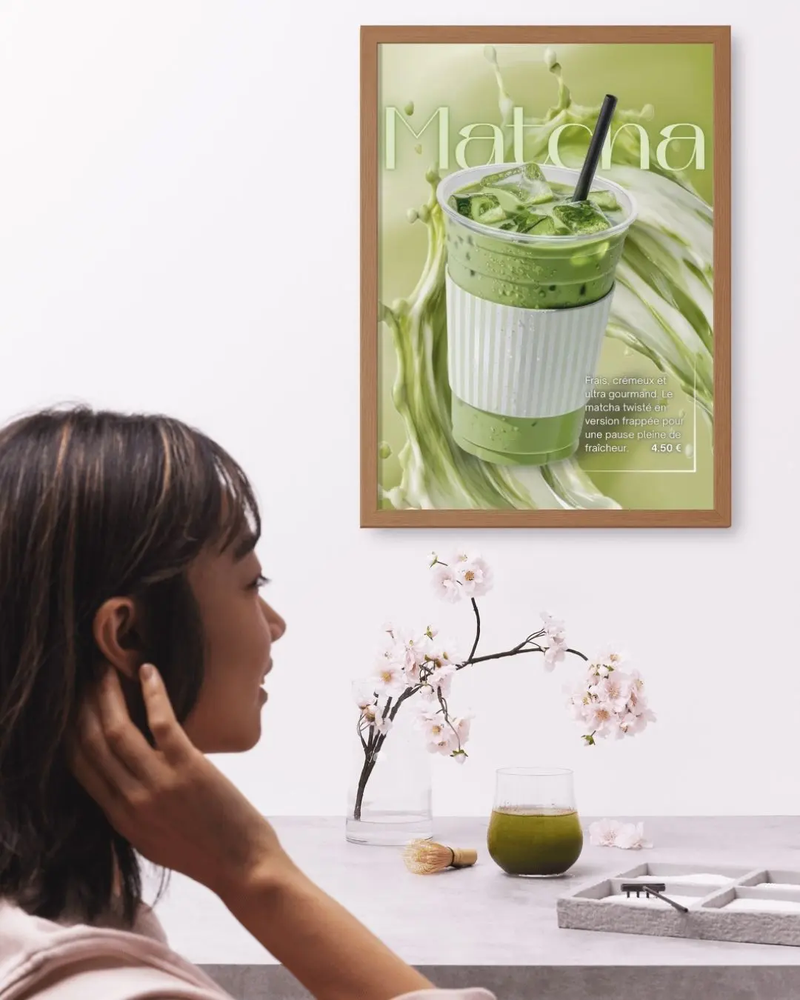
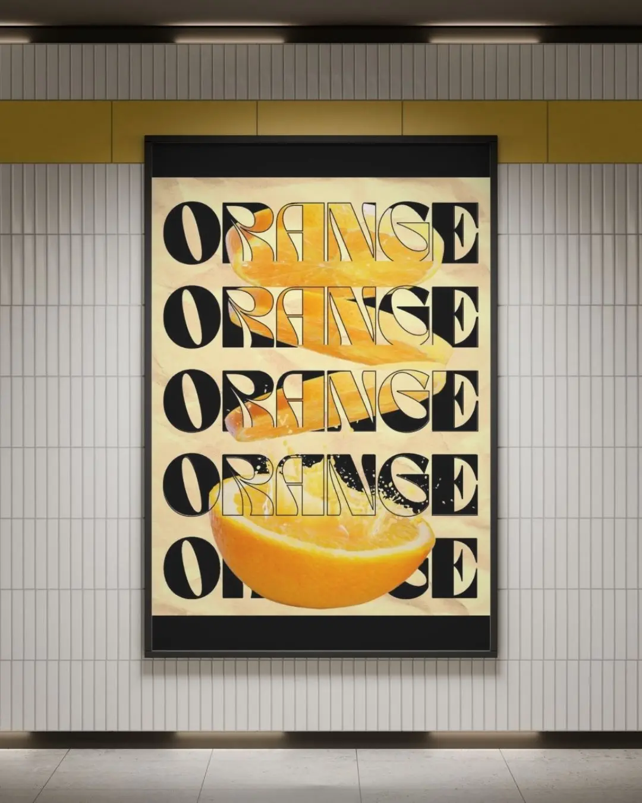
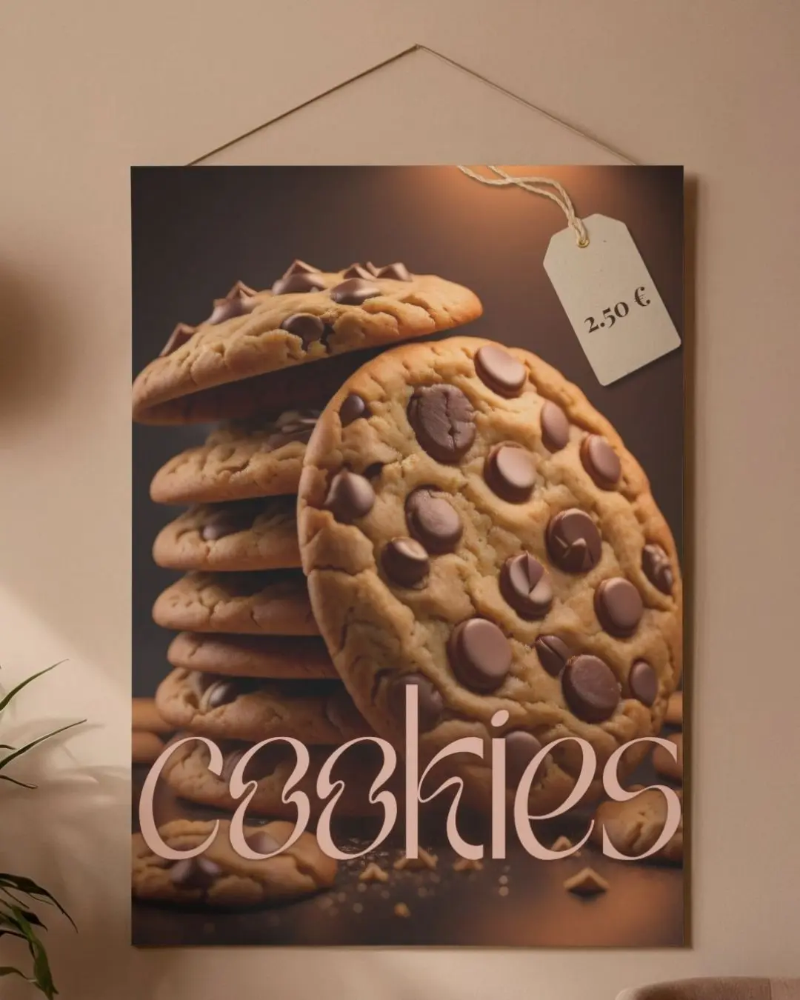
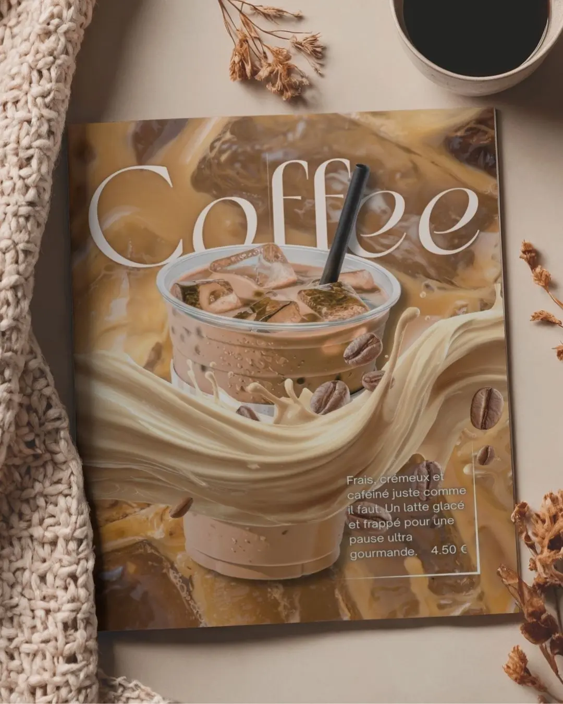

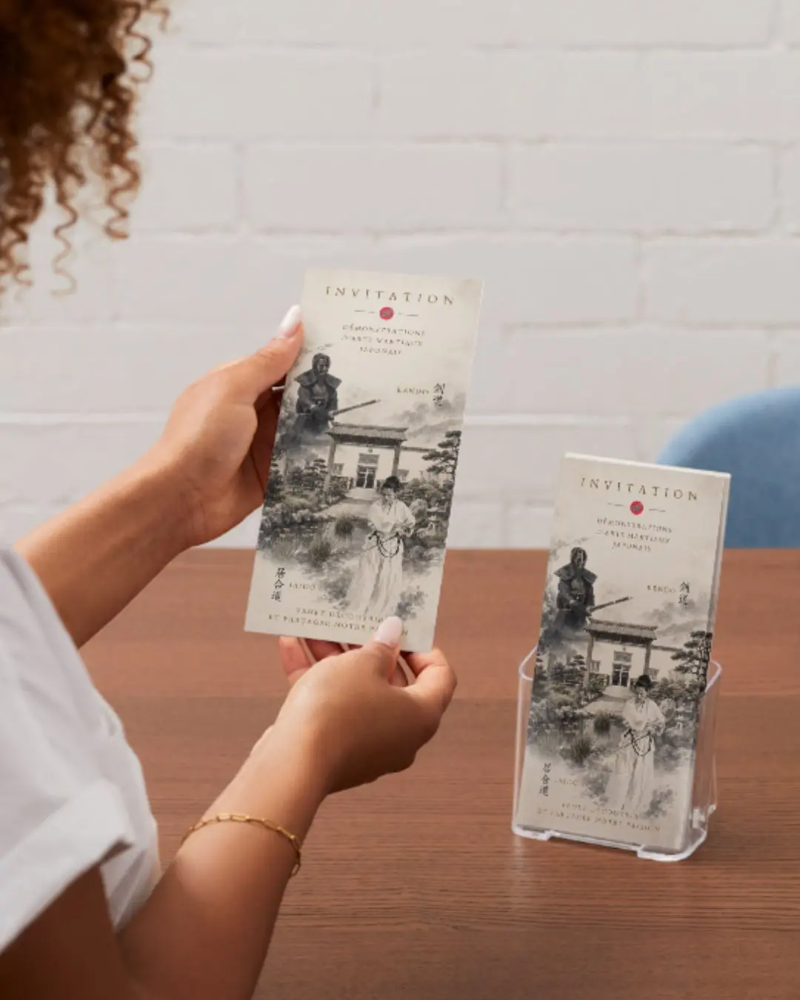
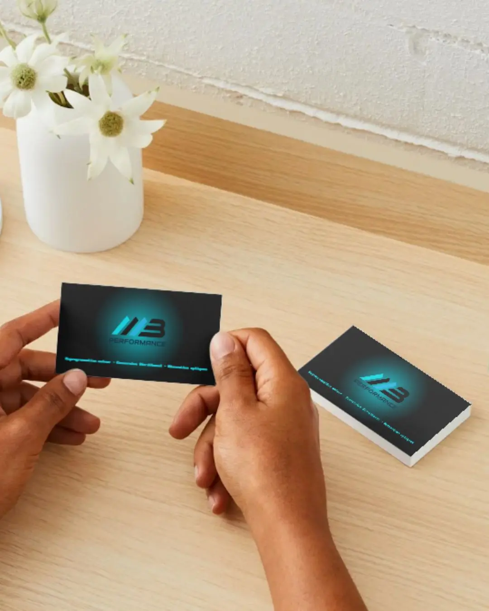
Des contenus pensés pour engager
Posts • Carrousels • Vidéos
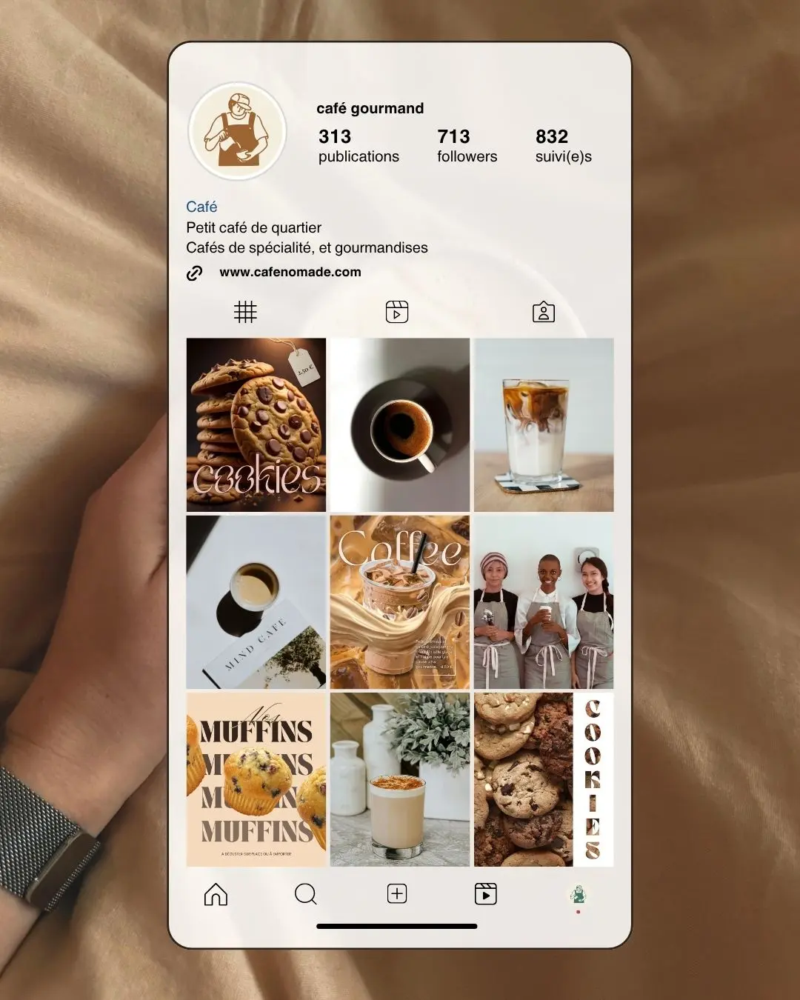


Des interfaces conçues pour attirer
Pages web • Sites vitrines • Parcours de contact
Des parcours qui donnent envie d'aller plus loin
LinkedIn • Rédaction • Visuels
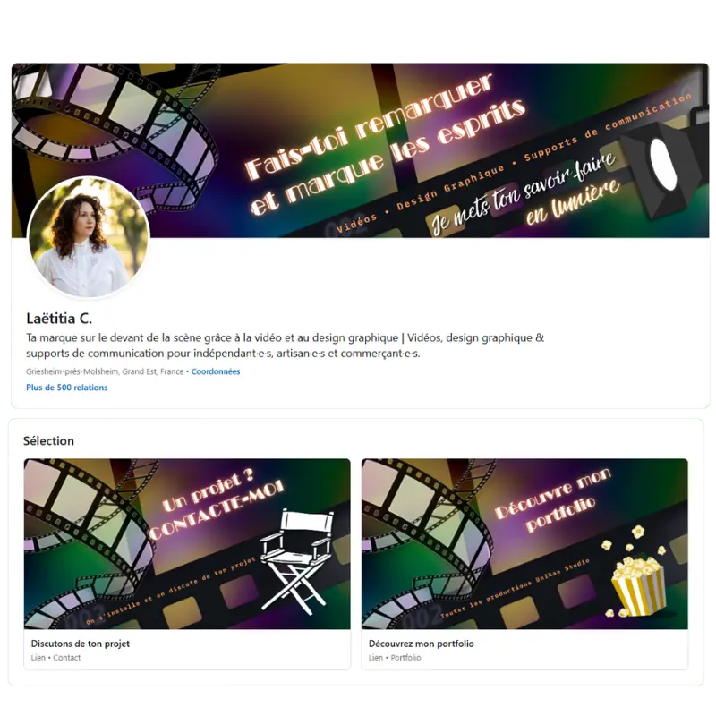
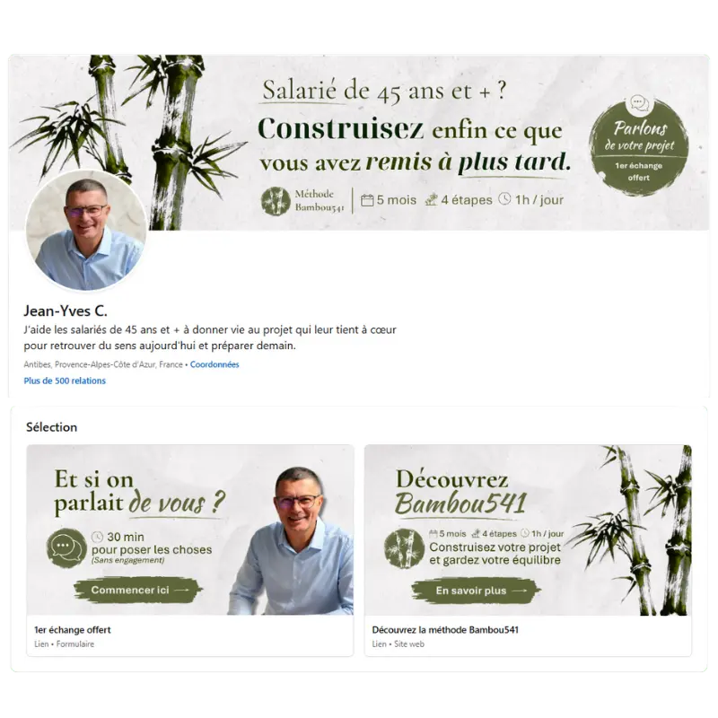
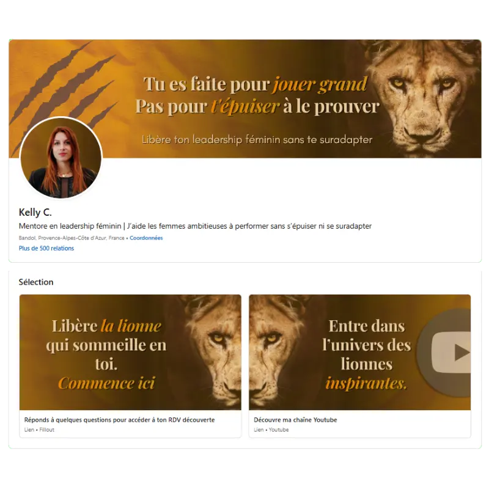
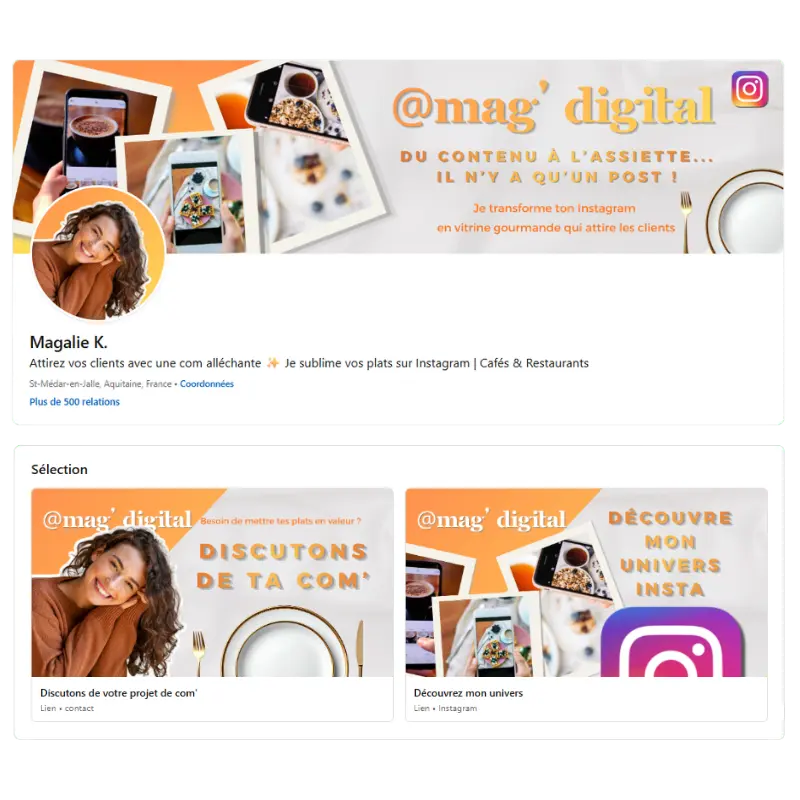
Des transformations concrètes & mesurables
Positionnement • Parcours client • Discours commercial

Laëtitia C.
Designer en communication
« Les idées étaient là. L’envie aussi. Mais entre réfléchir à son entreprise et réellement la construire, il y a parfois un sacré fossé. »
- ✓ Positionnement et message
- ✓ Parcours client
- ✓ Discours commercial

Annick M.
Consultante relation client
« Jusqu'ici ma bête noire c'était la prospection et le rdv de closing. »
- ✓ Parcours client
- ✓ Point de contact
- ✓ Discours commercial

Marianne C.
Communicatrice animalière
« J'avais du mal à présenter sereinement mon activité face à de nouveaux contacts. »
- ✓ Discours commercial
- ✓ Stratégie d'acquisition
- ✓ Traitement des objections
Vous investissez déjà du temps dans votre visibilité.
Pourtant, les résultats ne suivent pas.
Ne perdez plus votre temps à corriger les mauvais problèmes.
En 30 minutes, on identifie le maillon de votre parcours qui vous fait perdre des clients.
30 minutes offertes pour identifier le premier point de blocage de votre parcours client.